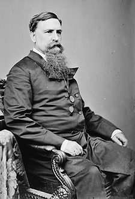

|
Although remaining loyal, Maryland was deeply divided, with the plantation
counties in the South and on the Eastern Shore favoring the South and those in
the North and West supporting the Union. In 1863, the Unconditional Unionists,
led by Henry Winter Davis, were able to score important gains, and the Unionist
legislature authorized the election of a constitutional convention. Meeting in
1864, this body framed a charter that abolished slavery, lessened the influence
of southern and Eastern shore counties, disfranchised secessionists, and made
provisions for education. The constitution was adopted by a narrow vote
dependent on soldiers' ballots, so in November 1864 slavery was abolished. In
the same month, Abraham Lincoln was able to carry the state.
In 1865 the Unionist legislature enacted a stringent Registry Act to keep
insurgents from voting, ratified the Thirteenth Amendment, and elected the
radical John A. Creswell to the Senate. But the conservatives were restive.
Unwilling to adjust to emancipation, they sought to perpetuate some form of
slavery, particularly by apprenticing minors, a custom that died out only
gradually after the Freedmen's Bureau and the judiciary condemned it. In
addition, the opposition was able to take advantage of the prevailing racism and
a split in the Union party, in which the moderates parted company with their
|

Thomas Swann
|
more radical associates. Thomas Swann, the Governor inaugurated early in 1866,
endorsed the policies of Andrew Johnson and reached an accommodation with the
conservatives. Actively seeking their support for his election to the Senate, by
appointing new registrars and police commissioners he enabled the conservatives
to win the election of November 1866. In return, they elected him to the Senate,
although at the last moment he refused to serve.
In the spring of 1867, after repealing the Registry Act, the conservative,
soon to be called Democratic, convention called an election for another
constitutional convention. This assembly framed a basic law that abolished all
test oaths, denied the vote to the blacks, and restored the dominance of the
plantation counties. Although it authorized the admission of black testimony in
the courts, it permitted the legislature to reverse this provision. Adopted
shortly afterward, the constitution of 1867 deprived all officeholders but the
Governor of their positions and perpetuated conservative rule.
In keeping with its conservative attitude, Maryland failed to ratify the
Fourteenth and Fifteenth Amendments. Firmly Democratic, it was carried by
Horatio Seymour in 1868, by Horace Greeley in 1872, and by Samuel J. Tilden in
1876. Only the introduction of black suffrage in 1870 following the passage of
the Fifteenth Amendment enabled the Republican party to make something of a
comeback, although until the 1890s the state remained under Democratic
domination.
Source: Hans Trefousse, Historical Dictionary of Reconstruction
(Westport, CT: Greenwood Press, 1991), 145-46.
|